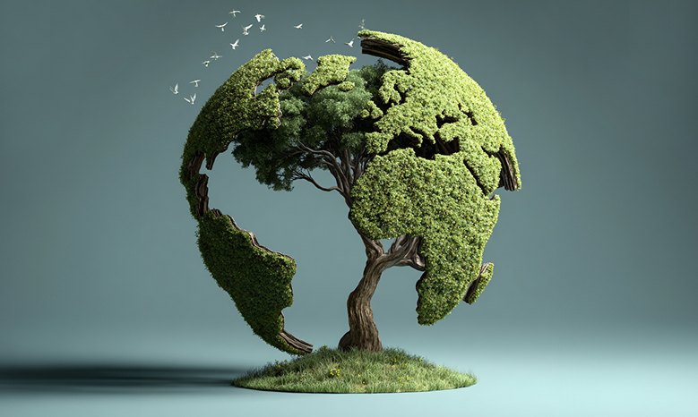
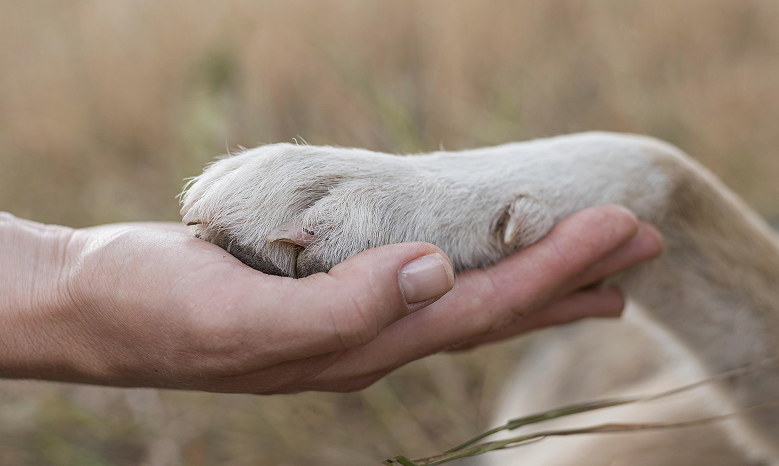

행성시대의 돌봄인문학
단절과 고립에서
상호의존과 보살핌의
공생 네트워크로
상호의존과 보살핌의
공생 네트워크로
행성돌봄인문학(Planetary Care Humanities)
행성돌봄인문학(Planetary Care Humanities)'은
기후 재난, 인구위기, 사회적 고립, AI 불확실성 등 복합적 위기
속에서'돌봄'을 시대적 해법으로 제안합니다.
사회·기술·생태를 포괄하는 융합적 관점에서 지구 행성 모든 존재의
상호의존성을 회복하고,
고립이 아닌 연립(聯立)의 이상을 실현하고자 합니다.
비전 (Vision)
-
01
돌봄 민주주의
-
02
윤리적 행성기술
-
03
새로운 관계론
-
돌봄 민주주의
차이가 차별이 아닌 연결과 포용으로 이어지는 돌봄 민주주의로의 전환
-
윤리적 행성기술
인간-기술-자연의공진화를 지향하는 윤리적 행성기술 구상

-
돌봄 민주주의
다양한 생명이 서로를 보살피고 공존하는 새로운 관계론의 디자인

키워드
- 호모 쿠란스(돌보는 인간)
- 트랜스글로벌 돌봄
- 기술-인간 공진화
- 연립과 공생
- 행성성
- 행성 정치
- 행성 돌봄
- 기후 위기
- 생태 위기
- 포스트 자본주의
- 돌봄 민주주의
- 돌봄 윤리